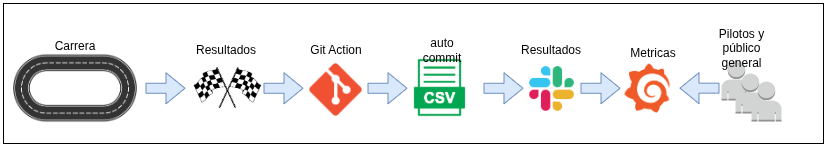
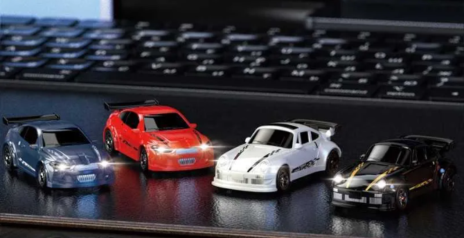
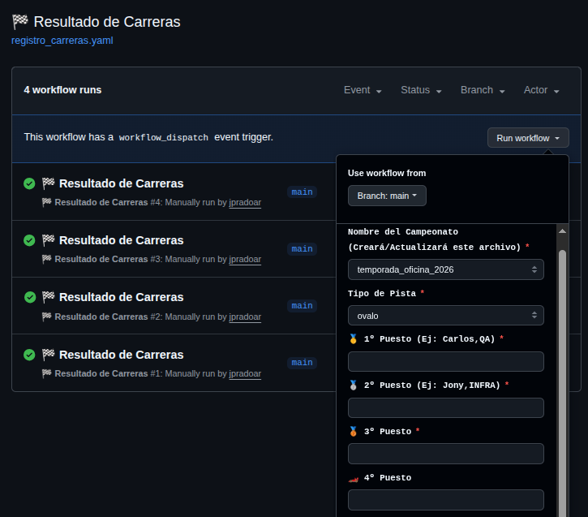
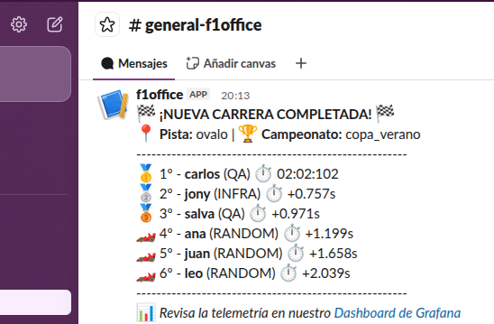
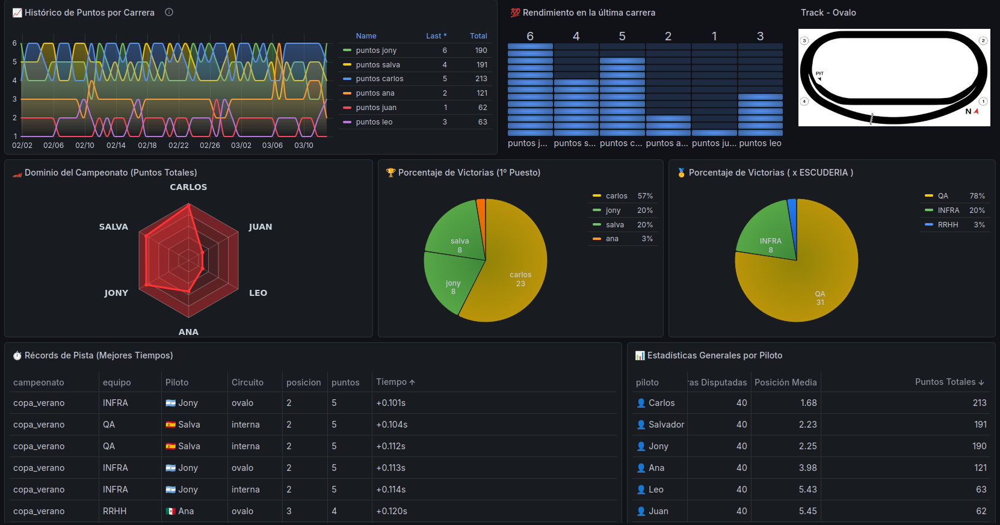

🏁 Gran Premio Oficina RC 1:64 🏎️💨
Telemetry & Race Control
¡Bienvenido al sistema de control de carrera y telemetría definitivo para las competiciones de autitos a radiocontrol (Escala 1:64) en la oficina!
Más que un simple proyecto tecnológico, esta es una iniciativa para fomentar el compañerismo, el team building y una sana competitividad entre las diferentes áreas de la empresa. Es la excusa perfecta para desconectar unos minutos de las pantallas, compartir risas entre departamentos y llevar las típicas carreras de escritorio al siguiente nivel, integrando un semáforo de salida profesional estilo Fórmula 1 y un panel de estadísticas en tiempo real.
Además, es también la oportunidad de compartir con otros el mundo del Código Abierto, fomentando que no solo podemos jugar y hackear autitos, sino compartir mods de dashboards de Grafana y explorar más tecnologías.
🎯 Objetivos del Proyecto
- Team Building: Romper el hielo entre departamentos y crear un espacio de interacción divertida y sana competencia en el lugar de trabajo.
- Infraestructura Serverless: Proveer un sistema gratuito y altamente disponible para dar salidas de carrera justas y sincronizadas con alertas visuales y sonoras.
- Automatización: Registrar los resultados y tiempos de cada Gran Premio de forma segura mediante flujos de trabajo en la nube.
- Transparencia y Emoción: Visualizar la clasificación general, estadísticas de victorias y récords de pista en un Dashboard público accesible para toda la oficina.
- Coffee-Break Sprints (Timeboxing natural): La autonomía de las baterías LiPo de 3.7V de los coches dura exactamente 15 min aprox, a máximo rendimiento. Esto crea un límite natural perfecto: las carreras duran exactamente lo que dura una pausa para el café, garantizando la diversión sin impactar la productividad del día a día.
🦾 Workflow CD/CD

🏎️ Los coches

🔗 Enlaces Rápidos
🏗️ Arquitectura del Sistema
El sistema está diseñado bajo una filosofía de "Data Engineering" ligera, aplicando el "Principio KISS" como principio fundamental y usando herramientas modernas para evitar el uso de bases de datos complejas y mantenimiento de sistemas y/o servers. (...y como siempre todo Open Source).
graph TD
A[📱 Semáforo Web App] -->|Pistoletazo de salida| B(🏎️ Carrera de RC)
B -->|Crono y Posiciones| C{Juez de Pista}
C -->|Ejecuta Workflow| D[⚙️ GitHub Actions]
D -->|Procesa e inyecta fila| E[(📄 Archivo CSV)]
E -->|Fetch vía URL Raw| F[🔌 Plugin Infinity]
F -->|Renderiza métricas| G[📊 Grafana Cloud]
💻 Tecnologias y Diseño
Github Dispatch (manual trigger)

Mensaje a slack (para generar la polémica)

Grafana Dashboard para ver las metricas

Grafana cloud para no tener que adminsitrar nada🔧 La Cultura del Garaje (Mods, Hacks y Límites)


Fomentamos el espíritu del Código Abierto llevado al hardware. Se permite (¡y se anima!) a modificar los vehículos para ganar décimas de segundo, pero para mantener la igualdad económica y la seguridad, establecemos unas mínimas REGLAS.